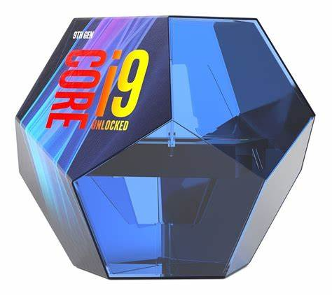
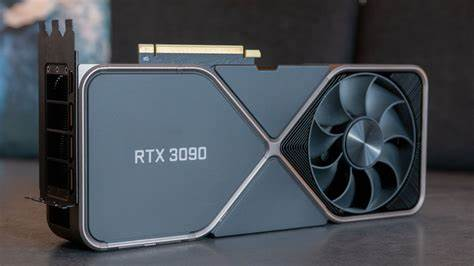
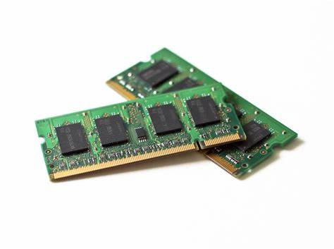

Componentes de PC
Los componentes de una PC son aquellos que ayudan a su mejor funcionamiento, un funcionamiento más óptimo al momento
de hacer los procesos que le sean asignados.
A mi punto de vista, algunos de los componentes importantes, sería el procesador, ya que, este es el encargado
de hacer los procesos, mejor procesador, rápido trabajo

Otro componente que considero importante, seria la tarjeta gráfica, que es la encargada de darnos
esa calidad de imagen, pero es más en videojuegos, nos da esa mejor calidad para mejor experiencia
de juego.

Y por último, pero no menos importate, las memorias RAM, que son las que cargan todas las instrucciones
que se ejecutan en el procesador, almacena los datos e instrucciones de los programas que se están ejecutando.
